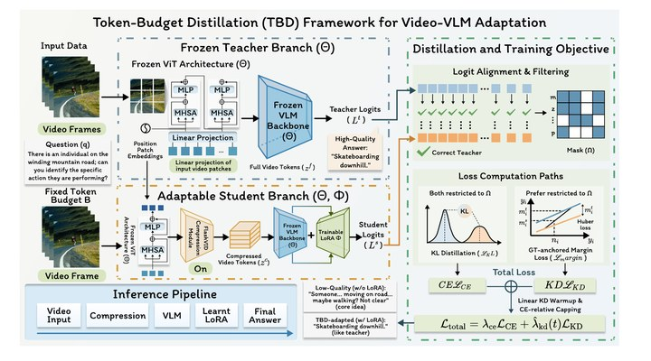
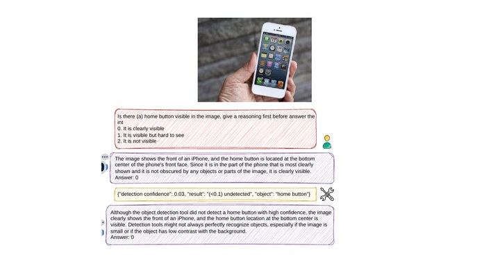

Guoping Luo (罗国平)
Undergraduate, B.Sc. in Computer Science
The University of British Columbia, Vancouver
Entered UBC in 2023
Email: gluo06 [at] student.ubc.ca
News
- 09/2026: Leading the continued expansion of the MissingBench dataset and the development of an improved follow-up manuscript, on which I will serve as the first author.
- 2026: Token-Budget Distillation: Transferring Full-Token Semantics to Compressed Video Vision-Language Models accepted to ACM Multimedia (ACM MM) 2026.
- 2026: MissingBench-Verified: Probing Vision-Language Models' Inability to Detect Missing Object Parts released as a preprint, with the benchmark dataset publicly available.
Research
I am interested in efficient and trustworthy multimodal foundation models, with a particular focus on vision-language model reliability, visual token compression, and robust multimodal perception. My recent work studies both efficient video VLM adaptation and systematic failures of VLMs when visually essential object parts are absent.
Publications
(*: equal contribution where indicated by the paper)|
 |
Token-Budget Distillation: Transferring Full-Token Semantics to Compressed Video Vision-Language Models
Xiaoyang Guo*, Guoping Luo*, Jusheng Zhang, Keze Wang, Wenhao Wang ACM Multimedia (ACM MM), 2026 PDF / arXiv / DOI A parameter-efficient teacher–student framework for adapting video vision-language models under fixed visual-token budgets. It combines LoRA with FlashVID-based compression and distillation from a full-token teacher to reduce semantic drift under aggressive token compression. |
|
 |
MissingBench-Verified: Probing Vision-Language Models' Inability to Detect Missing Object Parts
Wenqi Marshall Guo, Qingyun Qian*, Shiyu Zhou*, Guoping Luo*, Shan Du Preprint, 2026 PDF / arXiv / Data A human-verified benchmark of 118 images in which an essential part of an object has been removed. Across ten tested VLMs, the benchmark reveals persistent failures to report visually absent parts, including under detector evidence, image-processing tools, longer reasoning, and fine-tuning. Ongoing: I am independently expanding and curating the dataset and leading the continued development of an improved follow-up manuscript, on which I will serve as the first author. The extended dataset is available on Hugging Face. |
Awards
- International Major Entrance Scholarship (IMES), The University of British Columbia — CAD 20,000, 2023.
- International Major Entrance Scholarship (IMES), The University of British Columbia — CAD 20,000, 2024.
- International Major Entrance Scholarship (IMES), The University of British Columbia — CAD 20,000, 2025.
- International Major Entrance Scholarship (IMES), The University of British Columbia — CAD 20,000, 2026; the highest freshman entrance scholarship in UBC Science program.
- Dean's List, Faculty of Science, The University of British Columbia — 2023/24 Winter Session.